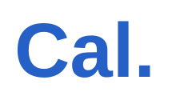

ליפית

אמיר רוזן
מנהל עם התמחות באסטרטגיה ויישום AI, מחבר בין טכנולוגיה, דאטה ואנשים
הובלת חדשנות, טרנספורמציה דיגיטלית ו-AI - מגיבוש אסטרטגיה עסקית וטכנולוגית דרך יישום בפועל והובלת שינוי ארגוני ועד אימוץ והשפעה עסקית.
לאורך יותר משני עשורים מילאתי תפקידי ניהול, טכנולוגיה, חדשנות ועסקים במגוון רחב של ארגונים ותעשיות: מפיננסים, ביטוח ורפואה ועד Retail, טלקום והייטק. הניסיון הזה מאפשר לי להביא לכל אתגר פרספקטיבה רחבה, לחבר בין עולמות וליישם תובנות ופתרונות מתחום אחד באחר.
במהלך הקריירה ניהלתי יחידות טכנולוגיות ועסקיות, אגפי P&L בהיקפים של מאות מיליוני שקלים, פעילות השקעות וחדשנות ודירקטוריונים, ובשנים האחרונות הובלתי בבנק לאומי מהלכי טרנספורמציה רחבי היקף ואת מרכז ה-AI בכפיפות ישירה למנכ״ל. אני משלב ראייה ניהולית ואסטרטגית עם הבנה טכנולוגית עמוקה ויכולת Hands-on, ויודע לקחת רעיון או יעד עסקי, להפוך אותו לתכנית מעשית ולהוביל אותו עד ליישום ולתוצאה.
ניסיון תעסוקתי
לחץ להרחבת כל תפקיד
מסע בזמן
1998 - היום
מהתקשורת
מדגם כתבות בעיתונות המובילה (TheMarker, מעריב, וואלה), ראיונות וידאו, מאמרים מקצועיים ופוסטים מרכזיים.